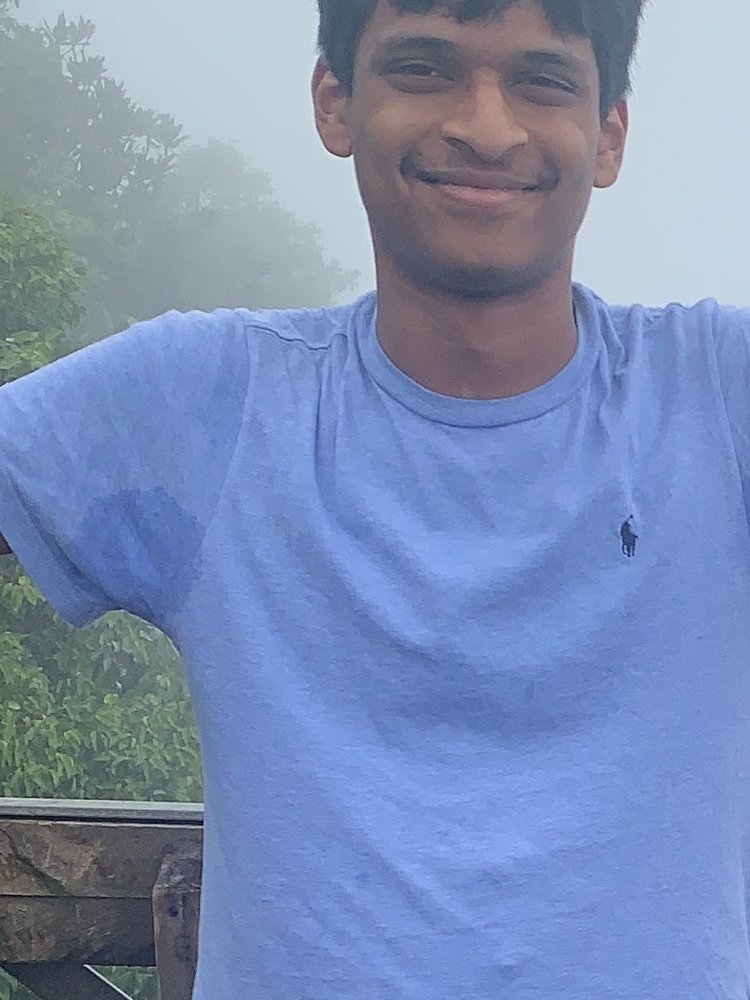

When I say I love to sing, I mean it.
I have been singing since I was six, and picked up piano alongside it.
I have performed in more than 40 school performances, competitions, auditions, and concerts. My experience includes classical music, pop, and musical theatre.
I attended Special Music School in New York and studied voice for six years at Third Street Music School, where I received the Harris Scholarship.
I also love hiking with family and friends. We have hiked in Seychelles, the Pocono Mountains, and Newark-area trails.


